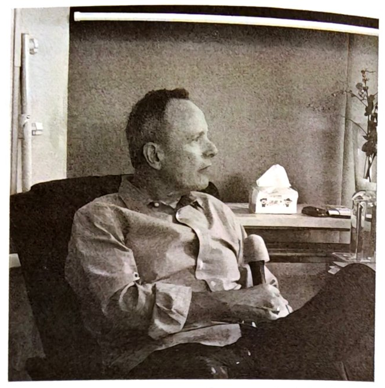
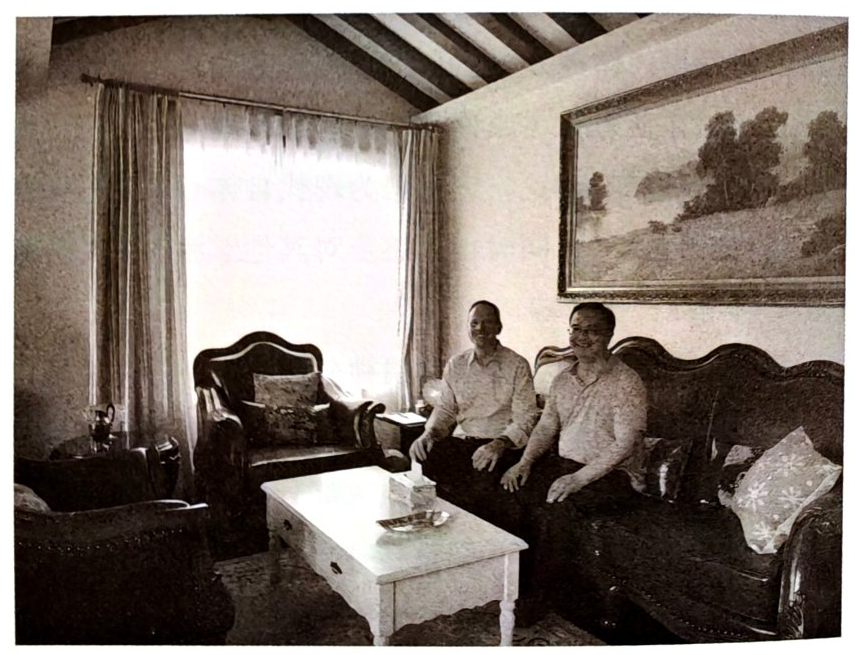
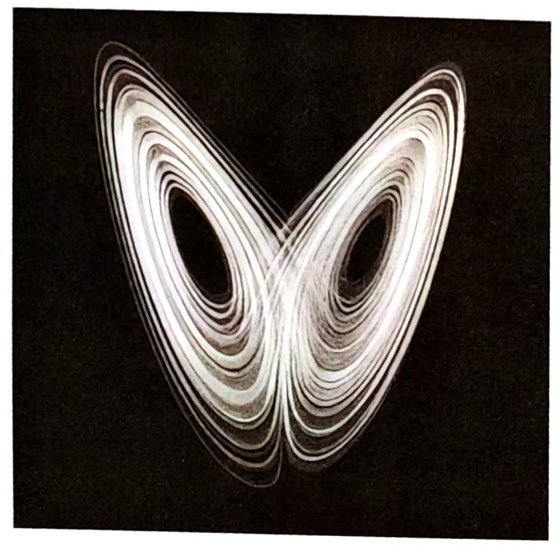

第十二章 复杂性系统理论
复杂性系统理论
复杂性系统理论是当代精神分析的一个重要发展，目前在精神分析领域中备受关注，已成为前沿热点。它主要源自史托罗楼、威廉·科伯恩、利维等学者的相关工作。利维在 1978 年就发表了与混沌数学相关的精神分析论文，但由于内容过于数学化，当时并未引起广泛关注。随后，史托罗楼于 1994—1996 年间提出并发展了非线性动力系统理论的视角，逐渐吸引了更多精神分析家的注意。在利维、史托罗楼等人的研究和著述的持续推动下，这一视角引起了更多精神分析家、分析心理学家和临床心理学家的关注，也启发科伯恩进一步探索复杂性系统理论在精神分析中的运用（史托罗楼等，2023；加拉策-利维，2025）。
科伯恩是当代精神分析复杂性系统理论最具代表性的学者之一。复杂性系统理论（或称非线性动力系统理论）已成为精神分析中的一项核心理论，它被视为现代自体心理学相关发展中最关键的方向之一，同时也正逐步对其他学派的精神分析家与分析心理学家产生影响。
我曾经问过科伯恩，关系性精神分析和复杂性系统理论是同一个理论还是不同的理论。他认为，复杂性系统理论应该被看作关系性精神分析的一个重要组成部分，因为该理论所涵盖的错综复杂的关系性，与关系性精神分析中对“关系”的理解是一致的，二者在对人类体验的阐释上也相互契合。（笔者曾于 2019 年与科伯恩会面交流，见图 5、图 6。）

图 5 威廉·科伯恩

图 6 威廉·科伯恩（左）与本书作者徐钧
科伯恩最早在美国加州地区的比昂派分析家那里接受精神分析训练，但训练结果造成了创伤。随后，他在科胡特的大弟子阿诺德·戈德伯格（Arnold Goldberg）那里接受了督导，并同时在史托罗楼那里接受分析，这才使得之前的创伤体验获得了转化和疗愈。此后，他又受到了一些关注复杂性系统理论的精神分析家和儿童发展心理学家的影响，进而与利希滕贝格和史托罗楼有了更多的交流与讨论。
在史托罗楼发展非线性动力观点的同时，科伯恩也在逐步形成自己的理论陈述。用他的话来说，走向激进的情境主义使他意识到：精神分析的临床过程不仅包含现象学的主体间性部分，也需要包含传统精神分析的某些部分，以及科胡特情境主义动力学诠释的某些部分。任何单一的陈述都有可能是“盲人摸象”般的局部观点，而临床实践则由临床的系统情境以及整体过程共同决定。史托罗楼为科伯恩的进一步研究提供了很多支持，正是在与史托罗楼的交流中，科伯恩进一步发展了复杂性系统理论。
吸引子原则
复杂性系统理论是一门横跨自然科学和社会科学的理论，我们可以先从气象学和生态学的视角来理解它。该理论最早与气象学、热力学和生态学相关。例如，在生态学领域，复杂性系统理论与 E. O. 威尔逊（E. O. Wilson）所研究的种群演化有关系。然而，复杂性系统理论最为人所熟知的起源故事，与混沌理论紧密相连。美国麻省理工学院（Massachusetts Institute of Technology，MIT）的气象学家爱德华·诺顿·洛伦茨（Edward Norton Lorenz）在运行模拟大气流动的数学模型时，使用同一台计算机进行二次数值模拟。他一到单位就启动程序，让计算机运行气象变化模型。一段时间后，他发现在数值模拟的过程中，产生了一个很有意思的现象：简而言之，两次数值模拟中初始时刻的一个极其细微的误差，会随着时间的推移被不断放大，最终导致两次模拟结果迥然不同。

图 7 吸引子示意图
我们将这两个系统在隐喻意义上称为“吸引子”（参见图 7；并非严格的数学概念，而是用来描述形成于互动过程中的一种相对稳定的走向），其可以表现为一种相对封闭的稳定状态，也可以表现为一种具有双向互动特征的状态。
此处我们主要讨论的是后者，因为前者往往不容易产生变化。而在后者中，互动双方在关系中的运行，会逐渐形成既相似又相对独立的体验系统。临床过程与前述过程类似，当咨询师和来访者产生了某一个交流位置的错位之后，他们就会渐行渐远。在咨询中，这种渐行渐远会呈现为：两人谈论的内容看似相关，实际上完全不同，但他们的吸引子又匹配在一起，并一起运动。这个过程可以比作气象学的“蝴蝶效应”——正如混沌理论中常提到的，亚马孙河流域的一只蝴蝶如果扇动翅膀，可能会引起太平洋上的一场飓风。事物在动态运行中存在其初始敏感性，当系统开始运行时，它在初始的位置上一旦出现偏差，双向吸引的过程就会发生。
生物的演化本质上是生物和环境持续互动的结果。以人类对糖分的吸收效率为例，在食物匮乏的环境中，能量利用效率较高（拥有所谓“节俭基因”）的个体具有明显的生存优势。他们吃一碗粥所吸收的能量比能量利用效率低的人要高很多，因此更容易存活，能量利用效率低的个体则更容易被环境淘汰。当环境转变为营养过剩、高热量的现代社会时，自然选择的方向会发生逆转——能量利用效率高的个体容易患上糖尿病等疾患，能量利用效率低的个体反而更容易存活。生存的环境压力也会影响社会行为，例如，在一些历史上遭受过严重饥荒的地区，人们至今在打招呼的时候仍会问“吃饭了吗？”，这便是生存经验在文化中的一种沉淀。吸引子的微观差异正是通过这样的机制来引发宏观上的变化的。
在临床过程中，主体间性理论认为双向互动的吸引状态是两个人之间的互动，但是复杂性系统理论认为这并不仅限于两个人的互动。例如，一个人至少内化了 6 个人的互动模式，包括父母、爷爷奶奶、外公外婆等；若进一步扩展，则可能涉及多个系统的交叉互动，其中蕴含很多动态过程。社会、政治、文化，以及个人的偏好，都会导致差异的产生，这些差异性的变化很难预测。例如，咨询师的健康状态会影响咨询效果，当咨询师与来访者进入一个系统时，来访者也带着自己的过往与行为模式，这时就形成了一种全新的生态系统。在这个全新的生态系统中，来访者和咨询师会相互影响，这就是前文所提及的主体间性。
咨询是受到多元系统影响的、相对开放的系统。除了受到来访者的影响，这一系统还会受到督导、行政管理机构、咨询机构等方面的影响。咨询师想要留在这个系统中，就要保持一种试谬主义的状态。什么叫试谬呢？它指的是我们随时可能犯错，即便受过很多专业训练，我们仍无法避免在临床中犯错。试谬主义要求我们能够接受错误、反思错误并且进行自我修正。科胡特也曾表达过类似的观点。在一次采访中，当被问及“在一些临床情境中，你对来访者的理解很到位，你是如何做到这一点的？”时，科胡特将其归因于自己对试错原则的坚持，而非天生的直觉。只有咨询师承认自身有可能犯错，咨访系统才会流畅且具有生命力。咨询师如果觉得自己不会在临床中犯错，就很可能会对来访者造成伤害。来访者在咨询中会呈现多样化的信息，而我们只有倾听并理解这些信息，才能找到更好的选择路径。
我们应该和来访者寻找共赢机会。这呼应了复杂性系统理论中的博弈论。一个经典的例子是“囚徒困境”：两个强盗被抓了，他们本来是朋友；警察为了防止串供，将两人分开关押。此时，他俩各自面临两种选择：保持沉默，或指认对方。由此，两人的选择会产生四种可能的结果：第一种，甲乙两人都保持沉默，结果是两人都获得较轻的刑罚；第二种，甲坦白，而乙不坦白，甲将获得减刑，乙则获重刑；第三种，情况与第二种相反；第四种，甲乙都指认对方，则两人都获重刑。由于他们无从得知对方是否会坦白，因此两人的选择就构成了一种博弈。1950 年，任职于普林斯顿大学数学系的阿尔伯特·塔克（Albert Tucker）教授应邀为斯坦福大学进行心理学学术报告时，将这种博弈结构命名为“囚徒困境”，用以描述特定类型的决策困境。
当博弈论应用于复杂性过程的演化时，往往会以动态的形式呈现，即演化博弈。例如，在囚徒困境中，如果博弈只进行一次，双方往往会倾向于指认对方。然而，如果这种博弈被重复数十次甚至上百次，就会出现一种特殊的现象：双方都趋向于不指认对方，转而采取一种合作的方式，从而实现“共赢”。若将复杂性系统理论迁移至咨询系统中，特别是在中长程咨询中，其演化博弈的特性将尤为明显。咨访双方会逐渐趋向于一种合作状态，最终取得双方共同获益的结果（阿克塞尔罗德，2007）。
临床系统的双向性
在当代临床过程中，要理解“双向互动的吸引状态”，就必须反思该系统如何影响我们、系统内部正在发生什么，以及我们应如何理解这些过程。科伯恩认为，临床过程本质上是一种关系性体验的流动，是动态演化的。但这种关系性体验具有情境依赖性，因此咨询师的工作实际上受到治疗系统所处情境的制约。换言之，咨询师所做的任何评估、所形成的关于来访者的全部感受，以及对来访者的各种回应，都离不开具体情境。情境本身塑造了咨询师的理解和工作的可能性，因此，咨询师无法脱离情境去思考自己对来访者的评估、感受和回应。
临床实践的多样性使一些精神分析师和临床心理学家逐渐感到不自信，他们意识到必须充分考虑情境的影响。咨询师的回应策略实际上是由来访者的回应所决定的，这体现了一种在双元系统中的协同决策过程。咨询师的判断和决策受到来访者无意识提供的情境信息，以及咨访双方共构系统的影响。正如史托罗楼所言：“咨询师不可能以孤独的心灵去做所有的事情。”进一步来讲，咨询师对来访者的评估也是由其个人风格、理论取向以及其他独立因素共同决定的。二元互动所形成的位置关系，通常伴随着吸引子的匹配过程。我们来看这样一个案例：一位来访者在很小的时候和父母幸福地生活在一起，但不久后父母遭遇了一场车祸，父亲去世，母亲虽得以幸存，却因此失聪。于是，在来访者的童年，他感觉到的是一个没有声音的世界。他很早就意识到自己和父亲之间是没有联结的，而与母亲的交流则长期处于沉默之中——无论他说话多大声，母亲也无法听到。在此后的家庭生活中，他逐渐陷入习得性无助的状态，变得不愿说话。而在家庭之外，他却是一个很喜欢说话、有些喋喋不休，甚至言语具有较强攻击性的人。他之所以在对话中总是要战胜别人，是因为车祸后家境衰落，他和母亲遭受亲戚的冷眼，他由此产生了自卑感。
这位来访者在咨询过程中表现出一些难以接近的特质。尽管他经历了离婚与很多朋友的离去，但他不想哭也哭不出来，给咨询师一种“生活很如意”的印象。每当咨询师试图靠近他，这位来访者就逐渐退却、回避，或用克制的方式告诉咨询师：他的生活是很积极的。咨询师和这位来访者就像一对吸引子——只要一方靠近，另一方就会退开。这样的互动很容易让咨询师感到不知所措。如果咨询师询问他对某件事情的看法，他会下意识地感到自己似乎能够说出一些内容。咨询师若能够在这个位置上与他谈论这些内容，便可以与他形成匹配。随着来访者谈论得越来越多，双方的交流频道会逐渐切换，最终趋于同频。咨询的过程中常会出现这样的情形：来访者感到咨询师不理解自己，不断地要求咨询师回应，而咨询师虽已想方设法地去理解，却感觉自己似乎快要被耗竭了，心中充满自我攻击、愤懑，最终被无力感所笼罩。在这个过程中，虽然来访者认为咨询师未能理解自己，但他仍持续前来咨询——即便经历了很多挫折，他仍对自己抱有希望。在临床建构的过程中我们可以发现，来访者在与他人的互动中展现出某种顽强，即内心渴望得救，希望自己能够摆脱困境。此时，如果咨询师坦诚地说“我感觉到，尽管你一次次地表达不满，但是你坚持了这么久——这一点或许很难被他人理解，但无疑表明了你在这件事情上已经投入了大量心力，而你希望有人能够真正懂得你的内心世界”，那么这是一种前缘诠释。当咨询师如此回应时，来访者往往会觉得“你终于听到我在说什么了”，甚至深受感动。这正是来访者一直希望被别人听到的内心愿望，他从未用语言直接表达，而是通过行为和前语言的方式传递，这对任何咨询师都会构成挑战——他所营造的互动氛围本身就会形成压力。然而，当咨询师真正理解他的那一刻，两人的同频性瞬间便形成了。
在复杂的双向互动过程中，也有观点认为咨询师应在主体间关系中进行自我暴露，即关注咨询师对来访者当下的体验，或对反移情的运用。而科胡特的理论强调的则是对情境的动力学诠释。与之相对，自我心理学派的治疗过程则更强调一种形而上的诠释方式，即偏重宏观与起源性诠释。早期主体间性学派往往对这种形而上的诠释不以为然，而形而上的自我心理学家则会对情境性或现象学的诠释方式嗤之以鼻。那么，在现象学的当下过程、形而上的诠释过程，以及对情境的诠释之间，应如何选择？这实际上是由具体临床情境、来访者的人格水平和整个临床过程的动态变化决定的。换言之，方法的选择是对当下情境的响应。这是一种基于生态学的灵动选择，也体现了临床实践中的试错原则（科伯恩，2021）。
真实关系中的相遇
在精神分析发展历程中，对治疗关系的理解经历了演变。早期的精神分析强调分析师的节制和匿名性，当下有一部分精神分析观点，在关系维度上更强调分析师主体性的参与，比如反移情，甚至比反移情更进一步的、带有主观色彩的情感的参与。在复杂性系统理论的视角下，我们强调“真实关系中的相遇”，也就是将那些被冻结的过往体验——那些被压抑的、无法被语言化的内容——准确地表达出来。在复杂的生态互动中，当咨询师回应来访者时，来访者能够在咨询师提供的多样性过程中逐渐将那些未被语言化的内容呈现出来，从而获得一种过去未曾语言化或未曾体验过的感受。波士顿变化过程研究小组指出，咨询中的重要时刻正是“相遇时刻”。在相遇时刻，来访者的移情和咨询师的反移情在两个方向上出现。或者说，来访者的真实情感与咨询师的真实情感在两个方向上出现，并参与当下的场域。此时，咨询师不再仅以专业姿态出现，而是以一个真实的“人”的身份在场。
当咨询师以一个真实的“人”的身份出现时，来访者的感受常会发生重大变化。我曾经有这样一位来访者，在她青春期的时候，父亲每晚帮她盖好被子后都会在她身上抚摩一下——那是父亲对孩子的抚摩，却总令她感觉浑身不自在，因为这种感觉对她来说有一种类似性的体验，又有一种接近乱伦的体验，因此她想摆脱这种体验。读大学后她不再回家居住，但表面上一直与父亲维持着良好的关系。尽管咨询师对她做了很多工作，但是她始终无法释然。在某次咨询会谈中，她提到了她的父亲，说他做过很多好事，很有正义感，是个不错的人，但与她及母亲的关系都不太好，所以她一直无法理解青春期时父亲的那些行为。那一刻，我不自觉地暂时离开了咨询师的位置，内心产生了一种感受：她的父亲是一个很复杂的人。于是我对她说：“我感觉你爸爸好像是一个很复杂的人。人性本身就特别复杂，有时候我们真的难以给它一个定位。”虽然这听起来很像一句套话，但是当她听到我这么说时，瞬间两眼放光。在后续的咨询中她告诉我，正是我说的那句“套话”使她对父亲的那种不舒服的感觉突然消失了。实际上，这句“套话”源于我以自己的生活经验对来访者的这部分感受形成的理解。正是在这样的相遇中，咨询师与来访者共同贡献出各自真实的个人化部分，这体现了咨询师的内外一致性。
精神分析的自适应和初始化态度
在精神分析复杂性系统理论的应用中，我们强调一种自适应的态度。自适应是自组织过程的一种表现，该系统具备自我组织的能力，这意味着我们应带着试错的基本心态去投入工作，接受在临床过程中会遇到困难的事实，同时也接纳在碰壁时显得笨拙的自己。当我们以这样的状态开展工作并秉持试错与学习的态度，在临床工作中边做边学时，我们与来访者便能够实现共同成长。当我们不停碰壁时，需要强调的是回到“初始化状态”。所谓初始化状态，是指在这种状态里，咨询师要抱持着一种“无住”的态度。正如《金刚经》所言：“应无所住而生其心。”这是无住的状态。这是一种不执着、不停驻的态度。当咨询师能够不把理论放在前台，而是回到初始化状态重新理解来访者时，复杂性系统理论便为咨询师提供了更加个人化的实践空间。
当代精神分析家越来越倾向于发展更加个人化的学派，以及更具个人特色的世界观。人与人的差异如此之大，如果仅通过机械学习而不加思考，我们获得的知识往往是很格式化、很统一的，我们无法确保它的适用性。真正具有适用性的理论，需要经过临床互动的检验、反复思考，并在整个临床生态系统中被筛选并最终得以留存。正如进化论所主张的，生物所具有的适应性特征经过生态环境的筛选得以保留；不具备适应性的特征即便暂时被保留下来，也会在环境压力下逐渐被淘汰。因此，保持一种试错与初始化的状态，使咨询师能够发挥精神分析的优势，即在临床中更好地适应多样化的来访者。科胡特的一段阐述或许能够帮助我们理解这一概念，他认为：“一个人必须保持‘半透性’——既要保证有足够的内容可以渗透进来，扰动你的心绪；又不能过多，让你始终处于防御、争辩和自证的状态。否则，你就很难在内心真正发展出属于自己的内容。这是一种介于给予和接受之间的状态。”这是一种很好的中道的智慧。科伯恩认为，复杂性系统理论所指向的多元状态，不仅体现在“术”的层面，更关乎“道”的层面，它促使咨询师回归自身的态度，并重新审视整个临床系统。精神分析的态度决定了整个临床工作的进展，而这也是当代复杂性系统理论的核心所在。
与当代自体心理学、主体间理论、关系性精神分析相关的发展还有很多，其中最著名的是托马斯·奥格登和朱塞佩·奇维塔雷塞（Giuseppe Civitarese*）等人提出的当代精神分析场论。在与来访者相遇的过程中，咨询师与来访者共同构成了一个场域（奇维塔雷斯，2024）。奥格登将此共同建构称为“第三主体”，朱塞佩则称之为“场域”。他们指出，咨询师应在这一“我们”的场域中，去发现遐想所指向的真正意义，帮助来访者体验内在的声音，并发现场域中第三主体的意义。奥格登（2025）这样阐述该过程：“阅读行为包括一种更具私人性质的相会形态。作为读者的你，必须允许我占据你，占据你的心灵，因为我能够吐露的心声，只能是属于你的。在阅读体验中，会形成一个第三主体，它既不能被还原为作者，也不能被还原为读者。第三主体的创造，是阅读体验的实质，也是精神分析体验的核心。”
无论是主体间性理论还是复杂性系统理论，其本质都是我们通过关系性过程或场域过程，帮助一个人真正地“存在于世”。所谓主体性，并非一种固定的状态，而是一种流动的状态。在这一点上，我们在某种程度上呼应了罗杰斯的人本主义观点：健康的人格是持续流动的，同时又开放地与环境保持信息交流，从而能够不固着于某个部分，而以开放的姿态应对新的环境和新的世界。
附：脚注
* Civitarese 旧译“奇维塔雷斯”。——编者注（p.218，正文「朱塞佩·奇维塔雷塞（Giuseppe Civitarese*）」）